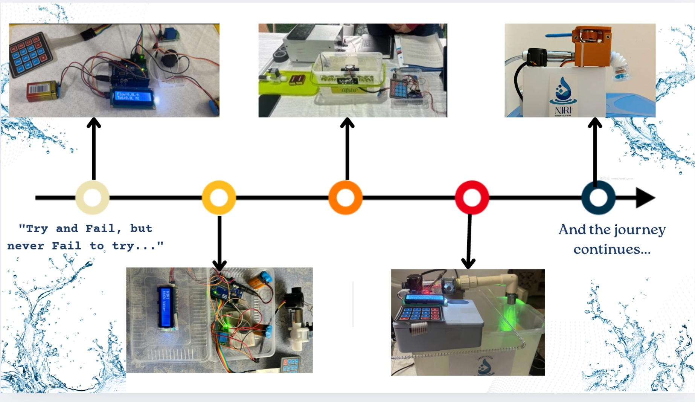

Aadya Kanchan / Mechatronics · IoT · Water Conservation
NIRI
Small changes.
Every day.
A patented, IoT-enabled mechatronic water conservation system.

NIRI device with the valve and gear mechanism.
Aadya Kanchan / Mechatronics · IoT · Water Conservation
A patented, IoT-enabled mechatronic water conservation system.
01 / System
NIRI is a patented, IoT-enabled mechatronic water conservation system that cuts wastage through intelligent flow regulation, real-time leak detection, automatic shut-off, and behavior-driven nudges.
It is built as a plug-in extension module that retrofits onto an existing tap or pipeline. Inside, a gear system drives a ball valve, rotating it to precise angles for fine-grained flow control. Refined over six iterations in three years, the device has five modes tuned to the highest-consumption points. It pairs with an AI water assistant that tracks consumption and uses the most effective methods to cut usage while maintaining comfort.

02 / Purpose
It all began in the summer of 2023, when I was 13. I turned on the tap, and not a single drop came out.
From my balcony, I watched tanker after tanker arrive; our society’s borewells had dried up. There were endless discussions about rainwater harvesting and percolation pits. But nothing changed.
Bengaluru faces a daily shortage of about 500 million liters of water, and globally, around 4 billion people live under high water stress. Existing fixes kept stalling for the same three reasons: large infrastructure changes, high cost and complexity, and no one taking ownership. Every solution sat at the society or government level, and nothing reached the individual tap.
In my macro and micro surveys, I found that nearly half of household water loss came from simple misuse rather than scarcity. I wanted conservation to feel like an everyday action, not a distant infrastructure problem.
Everyone should be able to save water every day, right at their tap. By pairing affordable technology with behavioral change, I want to make responsible water use a flexible, everyday habit that scales from homes to schools, hospitals, and public infrastructure.
03 / Journey
In the ATL lab, every test and piece of feedback reshaped NIRI.
I made the power supply self-sufficient with extended battery life for homes without a direct connection, simplified the controls, and rebuilt the blocking mechanism completely, moving from relays and a potentiometer to a servo-driven gear system with a ball valve.

04 / Experiments
I stress-tested NIRI against water impurities, water temperature, and calibration drift, until it held up in every condition.

These were the three variables I tracked because there was no scope for the device to falter in people’s homes or an industrial setting.
05 / Field Work
The first pilot was my school canteen at Vidyashilp Academy.
I was so worried the gears would buckle under pipe pressure that I checked on it every hour, and my teachers were sure something was wrong with me. From there, NIRI moved into hospitals and homes, where each site gave me different feedback.


06 / Validation
Mid-demo before 15 government civil engineers, I heard the familiar low rumble of a failing motor, and the demonstration stopped.
I asked for a second day, came back, and earned technical validation for the device achieving up to 30% reduction. Now I carry a spare of every component, which I call my “motor paranoia.”

Patent granted on 3 June 2026 (Patent No. 591067; Application No. 202441093699).
07 / Impact
NIRI taught me that even the best technology fails if people don’t adopt it. Solving big problems doesn’t always take grand gestures. Sometimes it takes simple, efficient solutions that create small changes every day.